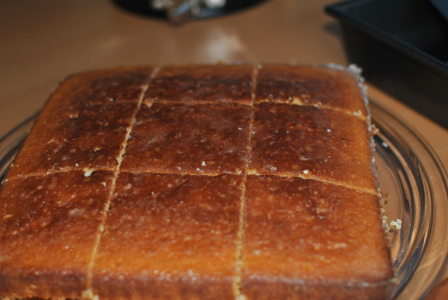

Zitronenschnitten

- Zubereitung: ca. 30 Minuten
- Backen: ca. 45 Minuten
Zutaten
Für den Teig
- 2 Eier
- 180 g Zucker
- 150 g weiche Margarine und etwas Mehr zum Einfetten
- fein abgeriebene Schale einer 1 Bio-Zitrone
- 180 g Mehl
- 2 TL Backpulver
- 120 ml Milch
Für den Sirup
- 140 g Puderzucker
- 50 ml frisch gepresster Zitronensaft
Zubereitung
- Den Backofen auf 180° Celsius vorheizen. Eine quadratische, flache Backform (18 cm Seitenlänge) mit etwas Margarine einfetten und mit Backpapier auslegen.
- Eier, Zucker und Margarine in einer großen Schüssel cremig rühren. Zitronenschale, Mehl und Backpulver zugeben und gut verrühren. Die Milch zugießen und alles zu einem glatten Teig verarbeiten. Den Teig in die Form füllen und glatt streichen.
- Etwa 40 bis 50 Minuten im Ofen backen, bis der Kuchen eine goldbraune Farbe angenommen hat und beim Andrücken leicht nachgibt. Aus dem Ofen nehmen und einige Minuten in der Form abkühlen lassen.
- Für den Sirup Puderzucker und Zitronensaft in einem kleinen Topf unter Rühren erwärmen, bis sich der Zucker aufgelöst hat; dabei darauf achten, dass die Mischung nicht aufkocht. Den warmen Kuchen mehrmals einstechen und den heißen Sirup mit
einem Löffel gleichmäßig darüber verteilen.
- Den Kuchen in der Form auskühlen lassen, dann auf eine Kuchenplatte stürzen und in 12 Stücke schneiden. Mit Puderzucker bestäuben und servieren.